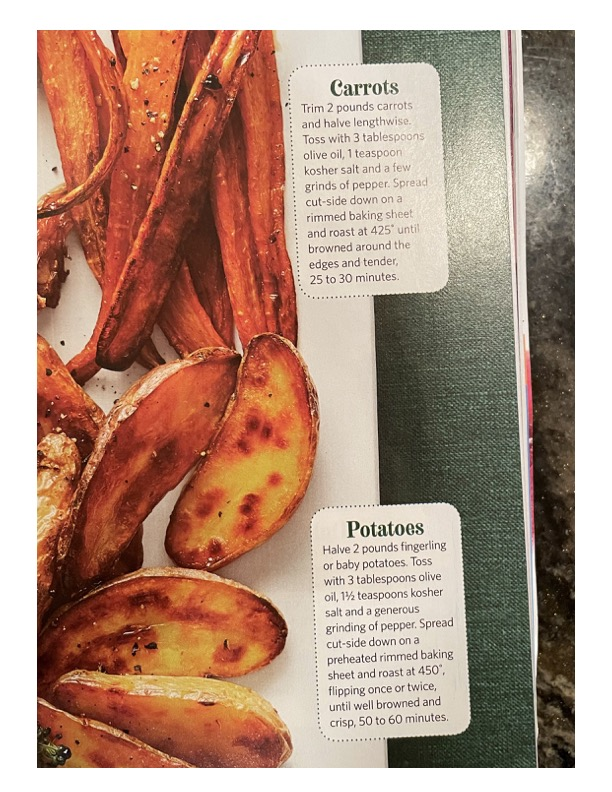

Roasted Carrots & Roasted Potatoes

Original cookbook page 251
Two simple roasted vegetable recipes - perfectly seasoned carrots with crispy edges and golden roasted potatoes with crisp exteriors.
Prep: 10 minutes • Cook: 25-60 minutes • Total: 70 minutes
Ingredients
- FOR ROASTED CARROTS:
- 2 pounds carrots
- 3 tablespoons olive oil
- 1 teaspoon kosher salt
- A few grinds of pepper
- FOR ROASTED POTATOES:
- 2 pounds fingerling or baby potatoes
- 3 tablespoons olive oil
- 1½ teaspoons kosher salt
- A generous grinding of pepper
Instructions
- FOR ROASTED CARROTS: Trim 2 pounds carrots and halve lengthwise. Toss with 3 tablespoons olive oil, 1 teaspoon kosher salt and a few grinds of pepper. Spread cut-side down on a rimmed baking sheet and roast at 425°F until browned around the edges and tender, 25 to 30 minutes.
- FOR ROASTED POTATOES: Halve 2 pounds fingerling or baby potatoes. Toss with 3 tablespoons olive oil, 1½ teaspoons kosher salt and a generous grinding of pepper. Spread cut-side down on a preheated rimmed baking sheet and roast at 450°F, flipping once or twice, until well browned and crisp, 50 to 60 minutes.
Recipe #251 from collection